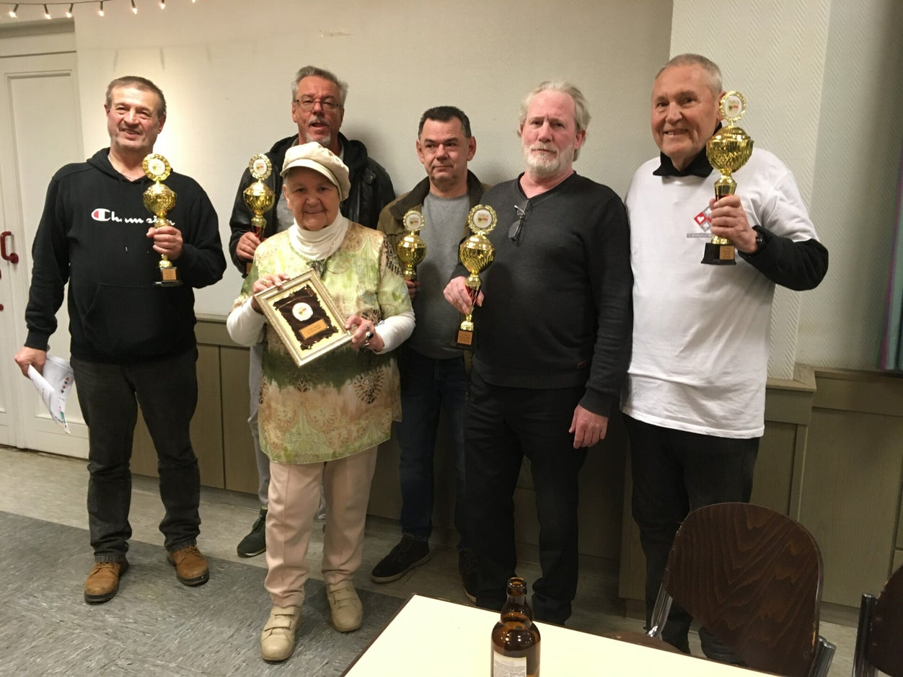

Pressemitteilung Am 14.06. fand das Vorständeturnier des DSKV auf Landesebene in Haan-Gruiten statt. An der Zwischenrunde nahmen fünfundzwanzig Skatfreundinnen/Freunde, die sich auf Verbandsebene für die Landesebene qualifiziert hatten teil. Es wurden drei 48_er Serien gespielt. Für die Endrunde, die am 29. August in Olsberg/Sauerland stattfindet, qualifizierten sich die besten 8 Teilnehmer. Auf die Plätze 1-3 schafften es Norbert Rojek vom Skatclub Herz Sieben Schwerte mit 3779 Punkten, Hans Günter Bender vom Skatclub RB Spay mit 3441 Punkten und Kurt Langer vom 1. Sintherner Skatclub 1992 mit 3328 Punkten. Im Anschluss fand die Siegerehrung mit der Vergabe von der Gold-, Silber- und Bronze-Medaille statt.
An der Endrunde des Vorständeturnier nahmen 120 Skatfreunde statt. Es wurdn 60 Geldpreise ausgelost. Kurt Langer erspielte in der ersten Serie 878 Punkte aus 9:1 Spielen. In der zweiten Serie fehlte noch mehr Kartenglück und es wurden nur 569 Punkte aus 8:3 Spielen. In der dritten Serie griff Kurt Langer an und erspielte 1304 Punkte aus 11:0 Spielen. Das Endergebnis war der 67, Platz.
Es fehlten zum 60. Platz nur wenige Punkte.


Frank Bertram nahm an der Vorrunde zur DSKV Online Meisterschaft teil, belegte von 120 Teilnehmern den siebten Platz und qualifizierte sich damit für die Zwischenrunde, die im Juni 2026 durchgeführt wird. Frank erreichte in der Vorrunde einen beachtlichen Punkteschnitt von 1192 Punkten je Serie.
Bei der Weltmeisterschafts Hauptgruppe des Deutschen Online Skatverband (DOSKV) wurde Frank Bertram 15. von 307 Teilnehmern und hat sich mit einem Punkteschnitt von 1092 für die Finalrunde qualifiziert. Von den 307 Teilnehmern haben sich 103 Teilnehmer für das Finale qualifiziert. Herzlichen Glückwunsch an Frank für diesen tollen Erfolg von allen Mitgliedern des
1. Sintherner Skatclub von 1992 für diese überragende Leistung.

Kurt Langer qualifizierte sich ´beim Vorständeturnier am 18.01.2026 für die Zwischenrunde auf Landesebene, die am 14.06.2026 stattfindet. Es nahmen 29 Skatfreunde an der Vorrunde teil. Gespielt wurden 3 Seren a) 48 Spiele. Kurt Langer erreichte mit 3120 Punkten den 8. Platz.
Kai Faßbender qualifizierte sich bei der Deutschen Einzelmeisterschaft der Herren für die Zwischenrunde auf Landesebene, die am 25. und 26.04.2026 in Wachtberg stattfindet. Es nahmen .... Skatspieler Teil. Gespielt wurden 4 Serien a) 48 Spiele. Kai Faßbender belegte den 8.Platz

2025
Frank Bertram belegte in der Endrunde zur Deutschen Meisterschaft einen beachtlichen 55. Platz von 196 Teilnehmern. Er erkämpfte sich in 8 Serien 8022 Punkte.
Tabelle Oberligaspieltag 2025
Am letzten Spieltag holte der 1. Sintherner Skatclub von 9 möglichen Punkten 7 Punkte und erreichte damit einen
sehr guten Tabellenplatz; nur 2 Punkte hinter Platz 3.
Gespielt haben Frank Bertram., Michael Hetz. Kurt Langer und Peter Schwarz.

Liga Tabelle
1. N - 04.40.001 - Lang unterm As Düsseldorf 35.827 20 : 7
2. T - 04.40.039 - Titzer Spitzen 34.600 20 : 7
3. K - 05.56.030 - 18-Wech Tönisheide 33.262 19 : 8
4. H - 04.40.041 - Skatfreunde Tüschenbroich 35.270 15 : 12
5. B - 05.53.012 - Skatfreunde Sankt Augustin e.V. 32.509 15 : 12
6. R - 05.50.011 - 1.Sintherner Skatclub 33.195 14 : 13
7. S - 04.47.022 - Hellweg-Buben Werl 32.610 14 : 13
8 .D - 05.50.030 - SC 1979 Myhl II 30.957 14 : 13
9. F - 05.56.001 - Skatfreunde Haan-Gruiten 33.929 13 : 14
10. M - 04.47.026 - 1. Skatclub Soest 32.579 13 : 14
11.P - 05.57.026 - Reizende Buben Altena 30.687 12 : 15
12. C - 04.47.030 - Haarbuben Wippringsen 30.320 10 : 17
13. A - 05.58.017 - TuS Heven 28.945 10 : 17
14. L - 04.40.007 - Reizende Buben Langen 28.614 10 : 17
15. E - 05.53.003 - Skatclub Kreuz Asse Bad Honnef 29.596 9 : 18
16. J - 04.47.019 - SC 75 Unna 29.531 8 : 19
Pressemitteilung
Große Freude beim 1. Sintherner Skatclub von 1992, da Frank Bertram sich auf Landesebene in Wachtberg für die Endrunde zur 68. Deutschen Einzelmeisterschaft bei den Herren, die vom 28.-29. Juni in Hannover stattfindet, qualifiziert hat. Die Freude war natürlich auch bei Frank Bertram groß, da er von 69 Teilnehmern den 9. Platz belegte. Die besondere Leistung wird deutlich, da sich nur 13 % der Teilnehmer für die Endrunde qualifizieren konnten.
Pressemitteilung
Der 1. Sintherner Skatclub von 1992 verzeichnet eine positive Mitgliederbewegung. In den letzten 3 Jahren konnten 11 neue Skatfreunde auf ihren Wunsch hin einstimmig in den Club aufgenommen werden.
Aus Platzmangel in den regionalen Ausgaben in der Pressemitteilung hier die im Artikel nicht genannten neuen Mitglieder: Peter Schwarz, Ralf Pestotnik, Heinz Bühl, Wilfried Puls, Norbert Bleckmann, Michael Hetz, Klaus Dieter Heimann, Kai Faßbender, Frank Bertram, Harry Gebhard, Norbert Lenz. vor den 3 Jahren am 28.09.2021 noch Frank Kühn.
Sehr schmerzhaft war dagegen im Januar 2025 der plötzliche Tod von Heinz Grünenwald.
An der Vorrunde zur Deutschen Einzelmeisterschaft in Alsdorf nahmen 7 Skatfreunde vom 1. Sintherner Skatclub teil. Nach 4 gespielten Serien konnten sich davon Kai Faßbender, Peter Schwarz, Michael Hetz und Frank Bertram für die Zwischenrunde auf Landesebene, die vom 12.-13. April in Wachtberg stattfindet qualifizieren. Achim Stümpges, der sich bereits für die Zwischenrunde des Vorständeturniers qualifiziert hat fehlten bei der Vorrunde zur DEM nur 10 Punkte und ist damit erster Nachrücker
Foto der Qualifizierten

Achim Stümpges qualifizierte sich
am 05.01.2025 für die Zwischenrunde Vorständeturnier,
die am 06.07.2025 stattfindet
2024
Westdeutscher SkatSportVerband e.V.Oberliga West 2024
Gesamtergebnis Endstand nach dem 5. Spieltag
Spielpkt. Wert.Pkt.
1L - 05.50.007 - 1. Skatclub Stommeln 56.957 38 : 7
2C - 05.50.030 - SC 1979 Myhl II 54.110 32 : 13
3K - 05.53.003 - Kreuz Ass Bad Honnef 53.900 32 : 13
4A - 05.53.012 - Skf. St. Augustin I 54.708 30 : 15
5F - 05.50.011 - 1. Sintherner Skatclub 53.229 30 : 15
6J - 05.53.005 - Skf:Weilerswist eV. 51.934 30 : 15
7N - 05.53.007 - BSG Stadtwerke Bonn 49.354 28 : 17
8B - 05.50.021 - Skf. Köln-Mauenheim 51.050 27 : 18
9E - 05.53.012 - Skf. St. Augustin II 48.551 27 : 18
10M - 05.53.009 - Herz Dame 82 Zülpich e.V. II 49.165 24 : 21
11D - 05.53.014 - Drückeberger Euskirchen 48.412 23 : 22
12H - 05.50.013 - JSG Würselen 45.905 21 : 24
Pressemitteilung Endrunde DEM 2024
vom 22-23.06.2024 fand die Endrunde zur Deutschen Skat-Einzelmeisterschaft 2024 in Altenburg, wo 1899 der Deutsche Skatverband (DSKV) gegründet wurde, statt.
Kurt Langer vom 1. Sintherner Skatclub von 1992 hatte sich auf Landesebene mit dem 4. Platz für die Endrunde qualifiziert.
Gespielt wurden am Samstag 5 Serien und am Sonntag 3 Serien jeweils a) 40 Spiele bei den Senioren. In 4 Serien fehlte Kurt Langer eine Menge Kartenglück, so dass es für Langer tröstlich war in der 2. Serie 646 Punkte (immer noch deutlich unter dem Schnitt von 860 Punkten), zu erspielen und danach in der 4. Serie 932 Punkte; in der 7. Serie 1282 Punkte und in der 8. Serie 897 Punkte erspielen konnte, was zum 63. Platz reichte.
Teilnahme Endrunde DEM in Altenburg
Kurt Langer 1. Sintherner Skatclub, Wilfried Schlicht,
Siegfried Just und Otto Kliemt alle vom Landesverb 5

Tabelle Oberliga West nach 4. Spieltag
1L - 05.50.007 - 1. Skatclub Stommeln 45.294 30 : 6
2K - 05.53.003 - Kreuz Ass Bad Honnef 44.800 30 : 6
3C - 05.50.030 - SC 1979 Myhl II 44.289 27 : 9
4J - 05.53.005 - Skf:Weilerswist eV. 42.665 25 : 11
5F - 05.50.011 - 1. Sintherner Skatclub 42.264 25 : 11
6A - 05.53.012 - Skf. St. Augustin I 41.314 23 : 13
7B - 05.50.021 - Skf. Köln-Mauenheim 40.831 23 : 13
8N - 05.53.007 - BSG Stadtwerke Bonn 39.072 23 : 13
9M - 05.53.009 - Herz Dame 82 Zülpich 39.753 21 : 15
10D - 05.53.014 – Drückeb.Euskirchen 39.185 21 : 15
11H - 05.50.013 - JSG Würselen 38.676 21 : 15
12E - 05.53.012 - Skf. St. Augustin II 35.711 19 : 17
Pressebericht Zwischenrunde DEM Senioren 2024
Tabelle 3. Ligaspieltag 04.05.2024

Ergebnisliste Zwischenrunde DEM 2024
Pressemitteilung Zwischenrunde DEM 2024
Zw.-Runde DEM 2024 die Qualifizierten.
Platz 1 Karl Heinz Klose 3. v. li. Platz 2 Günter Bongarten 2. v. li, Platz 3 Gerd Köhler 4. v. li. Platz 4 Kurt Langer 1. v. li.

Pressebericht K. Stadtanzeiger
vom 04.04.2024
Tabelle nach dem 1- Ligaspieltag
Oberliga West am 23.03.2024

Pressemitteilung
Am 25.02.2024 fand die Vorrunde zur Deutschen
Skat-Einzelmeisterschaft der VG 50 Köln-Aachen in
Herzogenrath statt. Vom 1. Sintherner Skatclub nahmen
Heinz Grünenwald, Kurt Langer, Dieter Schnecke, Peter Schwarz und Achim Stümpges bei den Senioren teil.
Gespielt wurden vier Serien a 40 Spiele. Nach den 4 Serien fand die Siegerehrung statt. Dieter Schnecke Vorsitzender des 1. Sintherner Skatclub belegte Platz 3 und erhielt mit großer Freude einen Pokal und war gleichzeitig für die Zwischenrunde zur DEM, die vom 20.-21.04.2024 in Wachtberg stattfindet, qualifiziert.
Vom 1. Sintherner Skatclub qualifizierten sich außerdem für die Zwischenrunde Achim Stümpges und Kurt Langer. Heinz Grünenwald ist inzwischen als Nachrücker für die Zwischenrunde qualifiziert.


Pressebericht Vorständetunier
Vorrunde Vorständeturnier Platz 1 Josef Peters 4364 Punkte Platz 2 Kurt Langer 3707 Punkte Platz 3 Helmut Semmler3600 Punkte


Pressemitteilung
Am 14. Januar 2024 fand die Vorrunde des Vorstände-Skatturniers von der VG 50 Köln Aachen in Alsdorf statt. 21 Teilnehmer spielten drei achtundvierziger Serien. Die ersten fünf qualifizierten sich für die Zwischenrunde, die am 07.07.in Wachtberg stattfindet.
Platz 1 belegte Josef Peters von den „Skatfreunden Ford Asse Köln“ mit 4364 Punkten.
Platz 2 erspielte sich Kurt Langer vom „1.Sintherner Skatclub“ mit 3707 Punkten. Platz 3 belegte Helmut Semler vom „Skatclub Nichtraucher Düren“ mit 3600 Punkten.
Außerdem qualifizierten sich mit 3593 und 3482 Punkten Günter Semler vom „Skatclub Nichtraucher Düren“ und Axel Schlesiger vom „Skatclub Skatfreunde Hürth“.
2023
Verbandsspielbetrieb VG 50 2023

DEM Endrunde Senioren 2023
Foto Teilnehmer der Verbandsgruppe 50 Köln-Aachen an der Endrunde DEM 2023 in Magdeburg
Otto Kliemt, Axel Schlesiger, Friedhelm Beckers, Anessa Feiler, Rolf Schnier und Kurt langer
Vom 08.bis 09.Juli 2023 fand die Endrunde DEM Senioren in Magdeburg statt.
Es nahmen 100 Teilnehmer an der Endrunde teil, darunter auch Kurt Langer vom 1. Sintherner Skatclub, da er sich zum 7. Mal für die Endrunde qualifiziert hatte. Es wurden am Samstag bei den Senioren 5 Serien a 40 Spiele gespielt und am Sonntag noch 3 Serien. Der Schnitt einer Serie liegt in der Endrunde bei ca. 850 Pkt.
In der 1. Serie spielte Kurt Langer 10:0 Spiele und erzielte weit über dem Durchschnitt 1198 Pkt. und landete damit auf
Platz 7.
In der 2. Serie erspielte Kurt Langer 9:1 Spiele und kam auch hier auf überdurchschnittliche 893 Pkt., was ihm den 10. Platz bescherte.
In der 3. Serie spielte Kurt Langer 8:0 Spiele die überdurchschnittliche 890 Pkt. einbrachte. Ergebnis war der 8. Platz.
In der 4. Serie konnten leider nur 5:1 Spiele erzielt werden was nur weit unter dem Schnitt 447 Pkt. einbrachte und für die nächste Serie Start auf Platz 28. Platz bedeutete-
In der 5. Serie gelangen 10:0 Spiele und daraus überdurchschnittliche 1097 Pkt., was wieder Vorrücken auf Platz 17 bedeutete.
Am Sonntagmorgen reichte es in der 6. Serie nur zu 3:3 Spielen und 173 Pkt. in den 30 Spielen die man selbst am Vierertisch mitspielt war die Kartenverteilung für Kurt Langer so miserabel, dass in den meisten Fällen ein mit reizen nicht möglich war und dann bei 3 riskant gereizten Spielen durch schlechte Findung und ungünstigen Kartensitz bei den Gegenspielern die Spiele verloren gingen. Bitteres Ergebnis war das Abrutschen von Platz 17 auf Platz 45.
In der 7. Serie reichte es erneut von der Kartenverteilung nur zu 4:1 Spielen und daraus nur 422 erzielte Punkte. was ein abrutschen auf Platz 65 bedeutete. Sehr enttäuscht war Kurt Langer klar, dass das Kartenglück bei einem 2-tägigem Turnier eine große Rolle spielt.
In der 8. und letzten Serie konnten 8:0 Spiele und daraus erzielte überdurchschnittliche 972 Pkt. etwas versöhnen, da immerhin ein Vorrücken auf den 53. Platz gelang. Bei aller Enttäuschung war die Teilnahme an der Endrunde zur Deutschen Meisterschaft wieder ein tolles Erlebnis bei dem viele bekannte Skatfreunde begrüßt werden konnten.
Pressebericht über die Teilnahme von Kurt Langer an der Endrunde zur DEM und vom Sommer-Preisskat und Monatssieger Juni.


Tabelle Oberliga West nach dem 4. Spieltag am 01.07.2023
| Platz | Mannschaft | gew | verl | verl Gegn | Pkt. | We.-P. |
|---|---|---|---|---|---|---|
| 1 | C 05.53.009 Herz Dame Düren/Zülpich 1982 | 351 | 42 | 144 | 48.219 | 26:10 |
| 2 | S 05.50.034 Hati Hati Wegberg II | 370 | 70 | 146 | 45467 | 23:13 |
| 3. | T 05.53.014 Drückeberger Euskirchen | 360 | 62 | 152 | 44226 | 23:13 |
| 4 | T 05.53.014 Drückeberger Euskirchen | 372 | 68 | 142 | 46120 | 22:14 |
| 5 | F-05.50.040-Ford Asse Köln | 332 | 43 | 161 | 45393 | 22:14 |
| 6 | L 05.50.052 - Rheindorfer SC | 369 | 60 | 123 | 45217 | 20:16 |
| 7 | P 05.53.003 - Kreuz Ass Bad Honnef | 378 | 72 | 146 | 43571 | 20:16 |
| 8 | D 05.50.007 1. Skatclub Stommeln | 308 | 40 | 163 | 42931 | 20:16 |
| 9 | K 05.53.007 BSG Stadtwerke Bonn | 321 | 59 | 159 | 40114 | 20:16 |
| 10 | J 05.50.011 1. Sintherner Skatclub | 332 | 47 | 152 | 42543 | 19:17 |
| 11 | A 05.53.012 Skf. St. Augustin I | 337 | 69 | 155 | 41314 | 19:17 |
| 12 | E 05.53.012 - Skf. St. Augustin II | 327 | 57 | 177 | 39458 | 16:20 |
| 13 | M 05.50.013 JSG Würselen | 283 | 36 | 171 | 39521 | 15:21 |
| 14 | B 05.50.021 Skf. Köln-Mauenheim | 299 | 54 | 155 | 37582 | 15:21 |
| 15 | H 05.50.030 - SC 1979 Myhl II | 258 | 43 | 142 | 35271 | 8:28 |
Am 4. Spieltag kamen zum Einsatz Heinz Grünenwald, Kurt Langer, Dieter Schnecke und Spielleiter Achim Stümpges.
Leider gab es am 4. Spieltag nur 3 Pkt. aus 9 möglichen Pkt. Trotzdem kann der Sintherner Skatclub in der neuen Zusammensetzung mit dem 10. Platz, ein Punkt hinter Platz 6, sehr zufrieden sein.
Am 10. Juni 2023 fand der 3.Ligaspieltag in der Oberliga West in Würselen statt.
Der 1. Sintherner Skatclub von 1992 startete mit Grünenwald Heinz, Langer Kurt, Schwarz Peter und Stümpges Joachim. In den 3 Serien erspielte der Sintherner Skatclub 6 aus 9 möglichen Punkten und landete damit auf dem 7.Platz; Punktgleich mit dem 6. Platz und nur einen Punkt hinter dem 4.Platz.
Ligatabelle Oberliga West nach dem 3. Spieltag am 10.06.2023
Ligatabelle Oberliga West nach dem 2. Spieltag am 13.05.2023
Am 13.05.2023 fand der 2. Ligaspieltag beim 1.Sintherner Skatclub statt.
Sinthern erkämpfte sich mit Heinz Grünenwald, Kurt Langer, Bernhard Selzer und Achim Stümpges 8 aus 9 möglichen Punkten und steht nun auf dem 8.Platz punktgleich mit den Skatfreunden St. Augustin II mit 10:8 Punkten
Ligatabelle Oberliga West nach dem 1. Spieltag am 22.04.2023
Die Zwischenrunde auf Landesebene zur DEM für Senioren fand vom 01.-02. April 2023 in Düren statt. Es wurden 6 Serien gespielt. Die ersten sechs qualifizierten sich für die Endrunde, die vom 08.-09.Juli 2023 in Magdeburg stattfindet.
Platz 1 belegte Günter Zobel TUS Heven mit 5981 Pkt.
Platz 2 belegte Axel Schlesinger Skatfreunde Hürth mit 5623 Pkt.
Platz 3 belegte Wolfgang Wiedemeyer TUS Heven mit 5403 Pkt.
Platz 4 belegte Anton Bierholz Herz Sieben Schwerte mit 5169 Pkt.
Platz 5 belegte Otto Kliemt Kreuz Bube Kirchhoven mit 5138 Pkt.
Platz 6 belegte Martin Röttgen Hobby SC Spay mit 5081 Pkt.
Kurt Langer 1.Sintherner Skatclub qualifizierte sich als Nachrücker mit 4831 Pkt. für die Endrunde in Magdeburg.
Vorrunde zur DEM
Am 12. Februar 2023 fand die Vorrunde zur DEM der VG 50 Köln-Aachen in Düren statt.
Vom 1.Sintherner Skatclub nahmen Heinz Grünenwald, Kurt Langer, Werner Schäfer und Peter Schwarz teil.
Nach der Begrüßung durch den Präsidenten der VG 50 fand eine Ehrung von langjährigen Mitgliedern des Deutschen Skatverband statt.
Der Präsident der VG 50 überreichte Kurt Langer vom 1.Sintherner Skatclub eine Urkunde für 25-jährige Mitgliedschaft mit der goldenen Ehrennadel.
Im Anschluss wurde die DEM der Senioren in 4 Serien ausgespielt.
Platz 1 belegte Otto Kliemt Skatclub Kreuz Bube Kirchhoven mit 4280 Pkt.
Platz 2 belegte Axel Schlesinger Skatfreunde Hürth mit 3784 Pkt.
Platz 3 belegte Kurt Langer 1.Sintherner Skatclub mit 4670 Pkt.
Die Plätze 1-3 wurden vom Präsident der VG 50 mit einem Pokal ausgezeichnet.
Für die Zwischenrunde, die vom 01.-02.04. ebenfalls in Düren vom Landesverband 5 ausgetragen wird, qualifizierten sich außerdem: Werner Schäfer vom 1.Sintherner Skatclub mit 3276 Pkt und Klaus Oleksen vom Skatclub Reizende Jungen Leverkusen mit 3242 Pkt. Heinz Grünenwald vom 1.Sintherner Skatclub fehlten nur 2 Punkte zur Qualifikation.
Kurt Langer erhält einen Pokal für den 3, Platz bei der Vorrunde zur DEM

2019
Kurt Langer erreichte in Düren den 3. Platz in der Vorrunde zur Deutschen Skat-Einzelmeisterschaft und qualifizierte sich für die Zwischenrunde, die vom 01.-02.04. in Wachtberg-Villip ausgetragen wird. Ulrich Albanus belegte den fünften Platz und qualifizierte sich damit ebenfalls für die Zwischenrunde.
2018
Pressebericht Pulheimer Wochenende
Ein großer Wermutstropfen war für den 1. Sintherner Skatclub der Abstieg aus der inzwischen eingleisigen Oberliga. Zielsetzung für das kommende Jahr "Wiederaufstieg aus der Landesliga in die Oberliga"
Klaus Reinegger und Rolf Ollig schafften es in die Endrunde des Vorstände-Turniers, das in Berlin stattfand. Sie belegten dort die Plätze 21 und 65 von 131Teilnehmern. Klaus Reinegger wurde für die beachtliche Platzierung mit einem Preisgeld des DSkV belohnt.
Kurt Langer wurde 2018 in der Vorrunde zur Deutschen Einzelmeisterschaft Verbandsgruppen-Vizemeister, bei den „Reizenden Uffzen“ Clubsieger und beim „1. Kölner Bundeswehr-Skatclub von 1979“ Vize-Clubmeister.
Bei der Vorrunde zur Deutschen Meisterschaft 2018 belegte Kurt Langer nach vier zu spielenden Serien mit 4039 Pkt. den 2. Platz von 16 Teilnehmern und qualifizierte sich damit für die Zwischenrunde zur DEM als Verbandsgruppen-Vizemeister.
2017
Kurt Langer erreichte in Düren den 3. Platz in der Vorrunde zur Deutschen Skat-Einzelmeisterschaft und qualifizierte sich für die Zwischenrunde, die vom 01.-02.04.2017 in Wachtberg-Villip ausgetragen wird. Ulrich Albanus belegte den fünften Platz und qualifizierte sich damit ebenfalls für die Zwischenrunde.
2016
Pressebericht Pulheimer Sonntagspost vom 01.10.2016
Große Freude beim 1. Sintherner Skatclub von 1992! 2012 aufgestiegen aus der Landesliga in die Oberliga, hat unser Club den Klassenerhalt 2016 erneut geschafft, obwohl die Voraussetzungen sehr schwierig waren. Für das Spieljahr 2016 wurde den Clubs vom DSKV mitgeteilt, dass es im Spieljahr 2017 nur noch eine Oberliga-Staffel geben wird; Folge der Strukturveränderung von Oberliga Nord-und Süd auf eine Staffel. Es steigen von 16 Mannschaften in jeder Staffel jeweils 8 Mannschaften in die Landesliga ab. Am Samstag 10.09.2016 fand der letzte Spieltag zentral in Wachtberg statt. Der Jubel der Skatreunde des 1. Sintherner Skatclubs war nach der 3. Serie riesengroß, als feststand, dass der Klassenerhalt geschafft war. Die Freude ist doppelt so groß, da nun auch im Jubiläumsjahr 2017 der 1.Sintherner Skatclub von 1992 in der Oberliga vertreten ist.
Pulheim, 14.04.2016
2016 nahm Kurt Langer an der Vorrunde zur DEM in Hürth Efferen teil und qualifizierte sich für die Zwischenrunde der DEM in Iserlohn.
2015
Pressebericht 01.04,2015
Vorsitzender des 1. Sintherner Skatclubs Kurt Langer auf Erfolgswelle.
Am 15. März 2015 qualifizierte sich Klaus Reinegger in Hürth-Efferen als Verbandsgruppensieger für die Zwischenrunde, die vom 18.-19.04 in Mechernich-Vussem ausgespielt wird.
Der Vorsitzende Kurt Langer belegte auf Verbandsebene den 3. Platz und qualifizierte sich ebenfalls für die Zwischenrunde zur Deutschen Skat-Einzelmeisterschaft.
2014
Am letzten Ligaspieltag im September 2014 schaffte die Mannschaft des 1. Sintherner Skatclubs mit 8 aus möglichen 9 Punkten den Klassenerhalt in der Oberliga.
Pressebericht Kölner Rundschau vom 25.04.2014
Der Vorsitzende Kurt Langer des 1. Sintherner Skatclubs qualifiziert sich mit dem 5. Platz in der Zwischenrunde zur DEM in Spay erneut für die Endrunde zur Deutschen Skatmeisterschaft, die vom 14.-15.06.2014 in Ulm stattfindet. Die Freude war bei Kurt Langer sehr groß, da ihm die Qualifikation für die Endrunde zur DEM jetzt bereits das sechste Mal gelang. 2002 nahm er das erste Mal in Krefeld und 2003 zum zweiten Mal in Kehl am Rhein bei den Herren mit den Ford-Assen teil. Danach gelang ihm 2011, 2012, 2013 und jetzt 2014 vier Mal hintereinander die Qualifikation für die Endrunde in Um bei den Senioren. In der Endrunde 2014 erreichte Kurt Langer den 48. Platz von 100 Teilnehmern.
Pressemitteilung Pulheim, 02.04.2014
Kurt Langer schafft bei der Vorrunde zur DEM die am 30.03 in Köln-Dünnwald ausgetragen wurde in vier vierziger Serien 3901 Pkt. und wurde damit bei den Senioren Verbandsgruppensieger in der VG 50. Der Präsident der VG 50 Heinz Haferung wurde mit 3833 Pkt. Vize-VG-Sieger. Ebenfalls für die Zwischenrunde zur DEM, die vom 12.-13.04.2014 in Spay ausgespielt wird konnten sich Willi Zollner und Helmut Weyers vom 1.Sintherner Skatclub qualifizieren.
Endstand Senioren Vorrunde DEM VG 50 2014
1 Kurt Langer 1. Sintherner Skatclub 1. Serie 493 Pkt. 2. Serie 1096 Pkt., 3. Serie 959 Pkt. 4. Serie 1353Pkt. = 3901 Pkt.
2 Heinz Haferung Wurringer Junge 1. Serie 1028 Pkt. 2, Serie 881 Pkt. 3. Serie 1556 Pkt. 4, Serie 368 Pkt. = 3833 Pkt.
3 Hans Klein Lustige Buben Leverk. 1. Serie 863 Pkt. 2. Serie 975 Pkt. 3. Serie 1159 Pkt. 4. Serie 604 Pkt. = 3601 Pkt.
4 Willi Zollner 1. Sintherner Skatclub 1. Serie 980 Pkt. 2. Serie 801 Pkt. 3. Serie 1157 Pkt. 4. Serie 633 Pkt. = 3571 Pkt.
5 Heinrich Krechel Ford Asse Köln 1. Serie 1128 Pkt. 2. Serie 1005 Pkt. 3. Serie 1008 Pkt. 4. Serie 392 Pkt. = 3533 Pkt.
6 Rudolf Winkler Lust Bub Leverk 1. Serie 986 Pkt. 2. Serie 1127 Pkt. 3. Serie 255 Pkt. 4. Serie 1030 Pkt.= 3398 Pkt.
7 Helmut Weyers 1. Sinth. Skatclub 1. Serie 787 Pkt. 2. Serie 966 Pkt. 3. Serie 1116 Pkt. 4. Serie 529 Pkt. = 3398 Pkt.
8 Klaus Reinegger 1. Sinth. Skatclub 1. Serie 972 Pkt. 2. Serie 929 Pkt., 3. Serie 501 Pkt. 4. Serie 928 Pkt. = 3330 Pkt.
9.Alfred Roersch Reiz. Junge Leverk 1. Serie 285 Pkt. 2. Serie 948 Pkt. 3. Serie 847 Pkt. 4. Serie 1026 Pkt. = 3106 Pkt.
10. Hubertus Siminski R Ju Leverk. 1. Serie 481 Pkt. 2. Serie 801 Pkt. 3.Serie 717 Pkt. 4. Serie 915 Pkt. = 2914 Pkt.
11. Rolf Ollig 1. SC Stommeln 1980 1.Serie 560 Pkt. 2. Serie 951 Pkt. 3. Serie 1148 Pkt. 4. Serie 156 Pkt. = 2815 Pkt.
12. Claus-Dieter Seuthe Skatfr. Hürth 1. Serie 576 Pkt. 2. Serie 993 Pkt. 3. Serie 538 Pkt. 4. Serie 668 Pkt. = 2775 Pkt.
13. H Borger Herz Dame Rodenk. 1. Serie 1014 Pkt. 2. Serie 632 Pkt. 3. Serie 577 Pkt. 4. Serie 499 Pkt. = 2722 Pkt.
14. Peter Seidel 1. Sinth. Skatclub 1. Serie 322 Pkt. 2. Serie 420 Pkt. 3. Serie 485 Pkt. 4. Serie 1289 Pkt.= 2516 Pkt.
15. Bernd de Jong Dellbr. Skatfreunde 1. Serie 491 Pkt. 2. Serie 378 Pkt. 3. Serie 1063 Pkt. 4. Serie 506 Pkt.= 2438 Pkt.
16. Jürgen Odenthal Sinth. Skatclub 1. Serie 487 Pkt. 2. Serie 891 Pkt. 3. Serie 988 Pkt. 4. Serie 18 Pkt. = 2384 Pkt.
17. Fritz Bürgel Wurringer Junge" Köln 1. Serie 1068 Pkt. 2. Serie 567 Pkt. 3. Serie -61 Pkt. 4. Serie 761 Pkt. = 2335 Pkt.
18. Dieter Kels Gut Blatt" Bg. Gladbach 1. Serie 232 Pkt. 2. Serie 1000 Pkt. 3. Serie 604 Pkt. 4. Serie 364 Pkt. = 2200 Pkt.
19. Klaus Heinrich SC "Ford-Asse" Köln 1. Serie 630 Pkt. 2. Serie 226 Pkt. 3. Serie 403 Pkt. 4. Serie 458 Pkt. = 1717 Pkt.
2013
Presssebericht Kölner Stadt-Anzeiger vom Mai 2013
Kurt Langer und Klaus Reinegger haben sich für die Endrunde zur Deutschen Einzel-Meisterschaft qualifiziert. Die Skatfreunde vom 1. Sintherner Skatclub, die sich in der Vorrrunde auf Verbandsebene für die Zwischenrunde in Kommern qualifizieren konnten, nahmen vom 23.-24.März in Kommern auf Landesebene teil. Aus dem LV 5 nahmen 44 Qualifizierte teil. Die ersten fünf qualifizierten sich für die Endrunde, die vom 25.-26.Mai in Ulm stattfindet. Nach 6 vierzigeer Serien konnten Reinegger und Langer jubeln, dennn sie waren für die Endrunde qualifiziert. Kurt Langer wurde mit 6486 Pkt. Vize-Landesmeister und schaffte damit einen Hattrick, da er sich zum 3. Mal hintereinander für Ulm qualifizieren konnte. Klaus Reinegger freute sich über seinen 3. Platz, der somit zum 1. Mal an der Endrunde teilnehmen kann.
Der VG 50 Präsident Heinz Haferung überreichte Kurt Langer und Klaus Reinegger beim traditionellen Oster-Preisskat die Unterlagen für die Teilnahme an der Endrunde zur DEM.
Die Krönung war zum dritten Mal hintereinander das Erreichen der Endrunde zur DEM, die 2011, 2012 und 2013 jeweils in Ulm ausgetragen wurde. 2011 erreichte Kurt Langer den 28. Platz von 100 Teilnehmern; 2013 den 35. Platz von 100 Teilnehmern.
Pressemitteilung Pulheimer Wochenende
2013 wurde Kurt Langer in der Vorrunde zur Deutschen Meisterschaft Vize-Meister der VG 50 und in der Zwischenrunde Vize-Landesmeister.
Vorsitzender Kurt Langer qualifiziert sich als Vize-VG Sieger für die Zwischenrunde zur DEM, die vom 23.-24.03.2013 in Kommern ausgetragen wird.
Der Sintherner Skatclub nahm mit sieben Skatfreunden am 17.02.2013 an der Vorrunde DEM in Erp teil. Nach 4 vierziger Serien belegte Kurt Langer mit 4188 Pkt. den 2. Platz und wurde als Vize-Verbandsgruppensieger dafür von der VG 50 mit einem Ehrenteller ausgezeichnet. in der Zwischenrunde, die vom 23.-24.03.2013 in Kommern stattfand, schafft es Kurt Langer erneut auf Platz 2 und qualifiziert sich als Vize Landesmeister für die vom 25.-26.05.2013 stattfindende Endrunde DEM in Ulm. In der Endrunde belegt Kurt Langer den 35. Platz von 100 Teilnehmern. Bei der Veranstaltung wurden auch die Deutschen Meister der Junioren, der Damen und der Herren ermittelt.
Klaus Reinegger belegte in der Vorrunde DEM mit 3402 Pkt. Platz sechs und ist damit ebenfalls für die Zwischenrunde, die vom 23. bis 24.03.2013 In Kommern ausgetragen wird, qualifiziert.
2012
Pressebericht Kölner-Stadtanzeiger vom 07.10.2012
Große Freude beim 1. Sintherner Skatclub. Im Jubiläumsjahr 2012 schafft der 1. Sintherner Skatclub von 1992 den Aufstieg in die Oberliga in der Konkurrenz mit 15 teilnehmenden Mannschaften.
Am letzten Ligaspieltag erkämpfte sich die Mannschaft sieben aus möglichen neun Punkten und verteidigte damit den zweiten von drei Aufstiegsplätzen in die Oberliga.
- Skatfreunde Bronsfeld 36:09 Punkte, 61.437 Spielpunkte.
- 1. Sintherner Skatclub 33:12 Punkte, 59.663 Spielpunkte.
- Skatclub Niederpleis III 31:12 Punkte, 54.344 Spielpunkte.
Vorsitzender Kurt Langer kann wieder auf ein sehr erfolgreiches Jahr zurückblicken, da er sich erneut für die Endrunde zur Deutschen Einzelmeisterschaft in Ulm qualifizieren konnte und mit der Sintherner Liga-Mannschaft den Aufstieg in die Oberliga schaffte.
Der Präsident der Verbandsgruppe 50 Köln, Heinz Haferung, überreichte Helmut Weyers vom 1.Sintherner Skatclub nachträglich eine Auszeichnung als Vizemeister bei der Vorrunde zur Deutschen Skat-Einzelmeisterschaft der Senioren.
Bei der Vorrunde zur Deutschen Meisterschaft 2018 belegte Kurt Langer nach vier zu spielenden Serien mit 4039 Pkt. den 2. Platz von 16 Teilnehmern und qualifizierte sich damit für die Zwischenrunde zur DEM als Verbandsgruppen-Vizemeister.
Die Mannschaft des 1. Sintherner Skatclubs hat sich am 15.04.2012 in der Vorrunde zur DMM in Köln-Nippes für die Zwischenrunde, die vom 01.-02.09.2012 in Kommern stattfindet qualifiziert.
Dienstag, 03. April 2012 Pressemitteilung
Kurt Langer erneut für die Endrunde zur DEM in Ulm qualifiziert
Vom 31.03.- 01.04.2012 traten vom 1. Sintherner Skatclub Kurt Langer, Jürgen Odenthal und Helmut Weyers, nachdem sie sich für die Zwischenrunde in Kommern qualifiziert hatten an, um sich eventuell für die Endrunde, die vom 02.bis 03. Juni in Ulm stattfand zu qualifizieren. Kurt Langer erlebte in den sechs zu absolvierenden Serien Höhen und Tiefen und schaffte am Ende die Qualifikation aufgrund seiner taktischen Spielweise. Nach der ersten Serie lag Kurt Langer bei den Senioren, die vierziger Serien spielen, mit 1444 Pkt. ganz vorne. In den beiden folgenden Serien musste sich Kurt Langer mit 681 und 849 Pkt. zufrieden geben. Ab der vierten Runde wurde nach den erreichten Pkt. gesetzt. Kurt Langer startete an Tisch eins Platz drei und konnte sich mit 821 Pkt. sogar auf Platz zwei vorarbeiten.
In der fünften Serie musste Kurt Langer viel Geduld aufbringen und kam nur zu 3:0 Spielen und rutschte auf Platz sechs ab. Nun war die sechste Serie für Kurt Langer die entscheidende spannende Serie, da sich nur fünf oder sechs Skatfreunde des gesamten Landesverbandes 05 qualifizieren würden.
Nachdem der Fünftplatzierte in der sechsten Serie einen Grand ohne drei mit 60 Augen verlor, konnte sich Kurt Langer von seinen Gegenspielern am Tisch zwei deutlich absetzen. Aber dann bekam Kurt Langer ein verlockendes riskantes Spiel; Grand ohne vieren, was sich nach der Findung zu einem Glücksspiel entwickelte. Da ein Gegenspieler keinen Kreuz bedienen musste ging das Spiel verloren und der hohe Spielwert machte zunächst alle Hoffnungen auf eine Qualifikation zu Nichte. Jetzt konnte nur die Devise Angriff helfen. Mit einem gewagten Nullouvert und einem glücklichen Grand-Hand reichte es am Ende für den sechsten Platz, der letztlich zur Teilnahme an der Endrunde reichte. Skatfreund Jürgen Odenthal belegte den 12 Platz und Helmut Weyers in Sinthern bisher sehr erfolgreich, hatte an diesem Wochenende kein Kartenglück, sodass es nur zum Platz 35 reichte.
Vorsitzender Kurt Langer aus Ulm von der Endrunde zur Deutschen Skatmeisterschaft etwas enttäuscht zurückgekehrt, da ihm das notwendige Kartenglück nur in einer von 8 Serien hold war. Kurt Langer setzte den Trend auch beim Sintherner Sommerpreisskat fort in dem er aus 5:3 Spielen 282 Punkte erzielte und in der Jahresrangliste vom dritten auf den fünften Platz abrutschte. Nun hofft Kurt Langer der Mannschaft am Samstag im Ligaspiel in Schleiden mit besseren Ergebnissen helfen zu können. Zur Zeit steht die Mannschaft des 1. Sintherner Skatclubs auf dem zweiten Tabellenplatz, der zum Aufstieg in die Oberliga reichen würde.
Donnerstag, 08. März 2012 Pressemitteilung
Am Sonntag, 04.03.2012 wurde die Vorrunde zur DEM von der Verbandsgruppe Köln in Köln Dünnwald ausgetragen, Helmut Weyers qualifizierte sich als VG-Vizemeister für die Zw-Runde zur DEM. Außerdem quqlifizierten sich noch Kurt Langer und Jürgen Odenthal, somit gleich drei Sintherner Skatfreunde für die Zwischenrunde.
Die Zwischenrunde fand vom 31.03. bis 01.04. in Kommern statt.
Kurt Langer qualifizierte sich in Kommern für die Endrunde, die vom 02.-03.06.2012 in Ulm stattfand.
2011
Pressebericht Kölner Rundschau vom 07.07.2011
Kein Meistertitel und trotzdem zufrieden! Der Vorsitzende Kurt Langer setzte alles auf eine Karte, schließlich ging es um die Deutsche Skatmeisterschaft in Ulm. Am Ende gab er sich mit dem 28. Platz von 100 Teilnehmern bei den Senioren und dem Ergebnis " bester Teilnehmer aus dem Köln-Bonner Raum geworden zu sein" zufrieden.
Kurt Langer wurde in der Zw-Runde zur DEM mit 6062 Pkt. LV 5 Vize-Landesmeister und qualifizierte sich damit für die Endrunde, die vom 18.-19.06.2011 in Ulm ausgetragen wurde.In der Endrunde wurden 8 Serien gepielt. Kurt Langer belegt nach acht Serien Platz 28 von 100 Teilnehmern. Die Serien eins und zwei liefen alles andere als gut. In den Serien drei bis acht kämpfte sich Kurt Langer nach vorne. Nach einem verlorenem Grand mit vier und zwei weiteren verlorenen Grand ohne zwei aus der ersten Serie, wo Langer alles auf eine Karte setzte, war die Chance Deutscher Meister zu werden vertan, eine bessere Platzierung war nicht mehr zu erreichen. Am Ende reichte es dennoch zum 28. Platz von 100 Teilnehmern; „bester Teilnehmer aus dem Köln/Bonner Bereich“ womit man zufrieden sein kann.
Dienstag, 19. April 2011
Kurt Langer vom 1. Sintherner Skatclub für die Endrunde zur Deutschen Meisterschaft qualifiziert.
In der Vorrunde, die am 27.03.2011 in Köln Dünnwald ausgespielt wurde, verteidigte Peter Seidel, der für den 1. Sintherner Skatclub antrat, seinen Vorjahrestitel als Verbandsgruppen-Meister. Lothar Schleucher hatte sich als Dritter, Kurt Langer als siebter für die Zwischenrunde qualifiziert.
In Werdohl fand vom 16.-17.04. die Zwischenrunde auf Landesebene statt. Mit 6062 Pkt. wurde Kurt Langer Landesverbands-Vizemeister und qualifizierte sich damit für die Endrunde, die vom 18.-19.06.2011 in Ulm stattfindet.
LV-Meister wurde mit 6083 Punkten Gerd Köhler von „Herz Sieben Schwerte“. Weitere fünf Skatfreunde, darunter der Präsident der VG 50 Heinz Haferung von den „Wurringer Junge“, ein weiterer Skatfreund aus Merkstein, St. Augustin, Witten und Weilerswist, konnten sich für die Endrunde vom 18.-19.06 in Ulm qualifizieren.
Pressebericht Kölner Rundschau vom 07.04.2011
In der Vorrunde zur DEM 2011, die in Köln Dünnwald ausgespielt wurde, verteidigte Peter Seidel vom Sintherner Skatclub seinen Titel als VG 50 Meister. Für die Zw-Runde zur DEM, die vom 16.-17.04.2011 in Werdohl stattfindet qualifizierten sich außer Peter Seidel noch Kurt Langer, Ulrich Albanus, Lothar Schleucher und Klaus Reinegger vom 1. Sintherner Skatclub. Kurt Langer wurde Landesvizemeister in der Zwischenrunde zur Deutschen Skatmeisterschaft worüber er sich sehr gefreut hat.
2010
Pressemitteilung Freitag, 17. September 2010
Seit 2010 spielt der 1.Sintherner Skatclub auch auf Verbandsebene mit und konnte bis heute viele Erfolge einfahren.
Der 1. Sintherner Skatclub verpasst ganz knapp den Aufstieg in die Oberliga. Am letzten Ligaspieltag startete die Mannschaft des 1. Sintherner Skatclub als Tabellenvierter von 19 Mannschaften. Der zweite Aufstiegsplatz war heiß umkämpft. Die Mannschaft des 1.Sintherner Skatclub, mit Jochen Jeske, Kurt Langer, Lothar Schleucher und Peter Seidel erspielten in den beiden ersten von drei Serien sechs von sechs möglichen Punkten und kletterten auf den begehrten Aufstiegsplatz. In der dritten Serie konnte die Mannschaft den positiven Trend nicht fortsetzen, sodass man am Ende mit 29 Punkten einen Punkt hinter dem Tabellenzweiten, Skatfreunde Lüttringhausen und Mauenheim I ebenfalls 30 Punkte, landete. Den ersten Platz sicherten sich souverän die Skatfreunde Mauenheim II. Vorsitzender Kurt Langer war dennoch mit dem Ergebnis sehr zufrieden, da er mit der Sintherner Mannschaft das erste Jahr am Verbandspielbetrieb teilnahm. Im nächsten Jahr wird zum Angriff geblasen lautet die Devise des Vorsitzenden.
Pressebericht Kölner Rundschau vom 22.04.2010
Die Mannschaft des 1. Sintherner Skatclub qualifiziert sich für die Zwischenrunde zur Deutschen Mannschafts-meisterschaft. Nach mittelmäßigem Beginn konnte sich die Mannschaft des 1.Sintherner Skatclubs steigern und sich für die Zwischenrunde qualifizieren. Die Mannschaft freut sich nun auf die Zwischenrunde, die vom 18.-19.09. in Spay ausgetragen wird.
In der Zwischenrunde zur Deutschen Einzelmeisterschaft fehlte Kurt Langer das Quäntchen Glück, sich für die Endrunde zu qualifizieren. Entscheidend war der Verlust von zwei Grand mit dreien, die unerwartet verloren wurden, da die Kartenverteilung sehr ungünstig stand. Am Ende fehlten diese Punkte zum Erreichen der Endrunde.
Dienstag, 02. März 2010 Pressemitteilung
Peter Seidel, Karl-Heinz Kohl und Kurt Langer für die Zwischenrunde zur Deutschen Skat-Einzelmeisterschaft in Herzogenrath qualifiziert. Der 1. Sintherner Skatclub startet erfolgreich in den Verbandsspielbetrieb. Zum ersten mal meldete der Club 8 Spieler für die Vorrunde zur Deutschen-Einzelmeisterschaft beim Deutschen Skatverband an. Das sich gleich 3 Skatfreunde für die Zwischenrunde, die vom 10. bis 11.04. in Herzogenrath ausgetragen wird, qualifizieren konnten, sieht der Vorsitzende als guten Einstieg für den Club, zumal Peter Seidel den 1. Platz bei den Senioren belegte und somit Vorrunden-Verbandsgruppensieger der Verbandsgruppe 50 (Raum Köln) wurde. Ulrich Albanus qualifizierte sich noch als Nachrücker für die Zwischenrunde.
2005
Pressebericht Pulheimer Wochenende vom 09.März 2005
Pulheimer in der Zwischenrunde zur Deutschen Skat-Einzelmeisterschaft!
Peter Seidel und Kurt Langer haben sich in der Vorrunde zur DEM In Hürth Efferen für die Zwischenrunde, die vom 02.-03.04.2005 in Bernkastel-Kues stattfindet, qualifiziert.
2004
Pressebericht KStA vom 13.04.2004
Die Mannschaft des 1. Sintherner Skatclub qualifizierte sich in der Vorrunde zur Deutsche Mannschaftsmeisterschaft mit 19163 Pkt. aus vier gespielten Serien für die Zwischenrunde, die am 29. August in Piesport an der Mosel ausgetragen wird.
2003
Pressemitteilung Pulheimer Sonntagspost vom 13.05.2003 und Kölner Stadt-Anzeiger vom 15.05.2003
Kurt Langer in Kehl am Rhein auf Platz 64.
Kurt Langer Vorsitzender des 1. Sintherner Skatclubs tritt in Kehl/Baden bei er Endrunde der 48. Deutschen Skat-Einzelmeisterschaft der Herren, die vom 17. bis 18. Mai stattfand an, nachdem er sich in der Zwischenrunde auf Landesebene LV5 von 168 Teilnehmern mit dem 7. Platz für die Endrunde qualifiziert hatte. An der Endrunde in Kehl nahmen 325 Herren teil. Nach den zu spielenden 8 Serien a 48 Spielen belegte Kurt Langer mit 8331 Punkten den 64. Platz. und war damit erfolreichster Skatspieler der Verbandsgruppe 50 Köln und Vierter des Landesverband 5.
Pressebericht Pulheimer Wochenende vom 17.09.2003
Skatspieler Kurt Langer hat erneut zugeschlagen. Mit der ersten Mannschaft von Ford Asse Köln, mit Franz Gomolka, Kurt Langer, Heinz Merkens und Gerd Mörsch wurden sie Landesverbands-Mannschaftsmeister bei der Zwischenrunde zur Deutschen Mannschafts-Meisterschaft. Gemeinsam belegten sie beim Turnier in Herzogenrath mit 18357 Pkt. souverän Platz 1. Insgesamt beteiligten sich 70 Mannschaften. Die 10 besten Mannschaften haben sich für die Endrunde, die vom 18.-19.Oktober in Bad Hersfeld ausgetragen wird, qualifiziert. In der Endrunde fehlte der Mannschaft dann etwas Kartenglück, das man braucht um vordere Plätze zu erreichen.
Pressebericht Pulheimer Sonntagspost vom 25.07.2003
Kurt Langer auf Erfolgskurs. Nach der Qualifikation zur Endrunde zur Deutschen Skat-Einzelmeisterschaft 2003 und der Qualifikation für die Endrunde mit der Städtemannschaft Pulheim zum 29. Deutschen Städtepokal erreichte er beim Vorständeturnier, die am 17. August in Spay gespielt wurde mit 4165 Pkt. aus drei Serien den 2. Platz.
Rangliste des Vorständeturniers in der VG 50 vom 04. Mai 2003
1 Platz Elisabeth Weis 4298 Pkt.
2. Platz Kurt Langer 4165 Pkt.
3. Platz Gerd Mörsch 4065 Pkt.
Es nahmen 32 Skatfreunde an dem Vorständeturnier teil. Platz 1 bis 8 qualifizierten sich für die Zwischenrunde.
Kurt Langer qualifizierte sich mit 7044 Pkt. bei der Zwischenrunde zur DEM in Mechernich Kommern erneut für die Endrunde zur Deutschen Skat-Einzelmeisterschaft, die vom 17.-18.Mai 2003 in Kehl am Rhein ausgetragen wird.
Pressebericht Pulheimer Wochenende vom 07.03.2003
Pulheim will den Deutschen Städtepokal im Skat gewinnen. An 8 Orten in Deutschland kämpfen am letzten Wochenende im April 97 Städtemannschaften um den Einzug in die Endrunde um den 29. Deutschen Städtepokal, die im November in Dieburg ausgetragen wird. Die Pulheimer Mannschaft, in der auch der Vorsitzende des 1. Sintherner Skatclubs mitspielte, hatte kein Problem sich in Dormagen souverän mit 37036 Pkt. aus drei Serien den 1. Platz von 15 Mannschaften zu erkämpfen. Die Mannschaft aus Pulheim gut besetzt mit erfahrenen Skatspielern, rechnet sich gute Chancen aus, den Deutschen Städtepokal nach Pulheim zu holen.
Kurt Langer qualifizierte sich mit der Pulheimer 12er-Städtemannschaft, der noch Uwe Berghaus, Heinz Füßer, Michael Gerharz, Albert Hoffmann, Steffen Joite, Heinz Kuhr, Arndt und Sabine Obiedzinsky, Michael Schleimer, Ewald Sokoll und Hans Verhasselt angehörten für die Endrunde zum 29. Seutschen Skat-Städtepokal, die im November in Dieburg stattfindet.
Die Vorrunde DEM fand 2003 in Liblar statt. Kurt Langer qualifizierte sich für die Zwischenrunde, die vom 05.-06.04.2003 in Mechernich Kommern stattfand. In der Zwischenrunde qualifizierte sich Kurt Langer für die Endrunde, die vom 17.-18.05.2003 in Kehl am Rhein stattfand. Kurt Langer belegte in der Endrunde zur DEM bei den Herren den 64. Platz von 325 Teilnehmern.
Die Vorrunde zur Deutschen Mannschaftsmeisterschaft spielte Kurt Langer mit der Mannschaft von Ford Asse Köln. Die Mannschaft qualifizierte sich dort für die Zwischenrunde, die am 31.08.2003 in Merkstein/Herzogenrath stattfand. In der Zwischenrunde qualifizierte sich Kurt Langer mit der Mannschaft für die Endrunde, die vom 18.-19.10.2003 in Bad Hersfeld stattfindet
2003 nahm Kurt Langer an der Vorrunde des Deutschen Städtepokals teil und qualifizierte sich für die Zwischenrunde und dort für die in Dreieich stattfindende Endrunde.
Kurt Langer qualifizierte sich in der Vorrunde des Vorständeturniers für die Zwischenrunde des Vorständeturniers, die am 17.08.2003 in Spay stattfindet.
2002
Pressebericht Pulheimer Sonntagspost Juni 2002
In der Endrunde zur 47. DEM der Herren in Krefeld, wofür sich Kurt Langer 2002 qualifiziert hatte, landete Kurt Langer mit 8143 erspielten Punkten (Schnitt von 1018 Pkt. je Serie) auf Platz 102 von 323 Teilnehmern. Vor der 6. Serie startete Kurt Langer noch auf Platz 76. in der 6. und 7. Serie von insgesamt 8 Serien bekam Kurt Langer nur wenige Spiele auf die Hand und ein paar Grand Spiele gingen knapp verloren, wodurch es nicht zu einer besseren Platzierung reichte.
Die 1. Teilnahme an der Endrunde der Deutschen Skatmeisterschaft war trotzdem eine positive Erfahrung. Das erste Mal zu erleben wie erfolgreiche Skatfreundinnen und Skatfreunde aus dem Vorjahr mit ihrer Landesfahne aus den 14 Landesverbänden unter musikalischer Begleitung in den Spielsaal einzogen, war ein schönes Erlebnis. Nach der Begrüßung durch den Gastgeber und einem Gelöbnis zur Fairniss von allen Teilnehmern wurde die Deutschland-Hymne gesungen und musikalisch begleitet, bevor das Turnier freigegeben wurde. Auch das rundete die Teilnahme sehr positiv ab, auch wenn man nicht Deutscher Meister wurde oder einen der vorderen Plätze erreicht hat.
Pressebericht Kölner Stadt-Anzeiger vom 13.04.2002
Kurt Langer nahm, nachdem er sich für die Zwischenrunde und Endrunde qualifiziert hatte, an der Endrunde zur Deutschen Einzelmeisterschaft für Herren die vom 08.-09.06.2002 in Krefeld stattfand teil.
Zwei Pulheimer in der Endrunde 2002 zur Deutschen Skat-Einzelmeisterschaft der Herren.
Zwei Skatspieler aus der Stadt Pulheim haben sich bei der Zwischenrunde in Radevormwald für die Teilnahme an der Endrunde zur Deutschen Meisterschaft in Krefeld qualifiziert. Unter 187 Skatspielern des Landesverbandes 05 wurden die 27 Besten ermittelt, die an der Endrunde vom 08.-09. Juni in Krefeld teilnehmen werden. Insgesamt werden 323 Skatspieler aus allen 14 Landesverbänden an der Endrunde teilnehmen. Michael Gerharz vom 1. Stommelner Skatclub erreichte in der Zwischenrunde 7082 Pkt., Kurt Langer Vorsitzender des 1. Sintherner Skatclub brachte es auf 6734 Pkt. Er trat für den Skatclub Ford Asse Köln an, bei dem er seit 5 Jahren auch Mitlgied ist. Der Deutsche Meister wird in der Endrunde in Krefeld aus acht Serien ermittelt.
2000
In einem Ranglisten-Skatturnier mit 400 Teilnehmern belegte Kurt Langer den 9. Platz und kassierte ein stattliches Preisgeld.
Am 23.Januar 2000 fand in Lechenich die Vorrunde zur Deutschen Skat-Einzelmeisterschaft der VG 50 Köln statt. Bei den Herren nahmen 128 Skatfreunde aus der VG 50 teil, wovon sich 10 Teilnehmer für die Zwischenrunde zur DEM qualifizierten. Nach Beendigung der vier 48-er Serien gab es folgende Rangfolge:
Platz 1 Robert Will Dellbrücker Skatfreunde
Platz 2 Michael Neuenhaus Karo Einfach Bergisch Gladbach
Platz 3 Horst Rieger SC Rauchfrei Colonia Köln
Platz 4 Kurt Langer 1. Sintherner Skatclub für Ford Asse Köln angetreten, da Sintherner Skatclub noch nicht am Verbandsspielbetrieb teil nahm.
Platz 5 Dietmar Radermacher SC Wurringer Junge
Platz 6 Dieter Schorning 1. SC Bocklemünd
Platz 7 Jürgen Reimer Karo Einfach Bergisch Gladbach
Platz 8 Peter Clemens Reizende Junge Leverkusen
Platz 9 Georg Karbowiak Karo Einfach Bergisch Gladbach
Platz 10 Dieter Leonhardt SC Müllemer Null